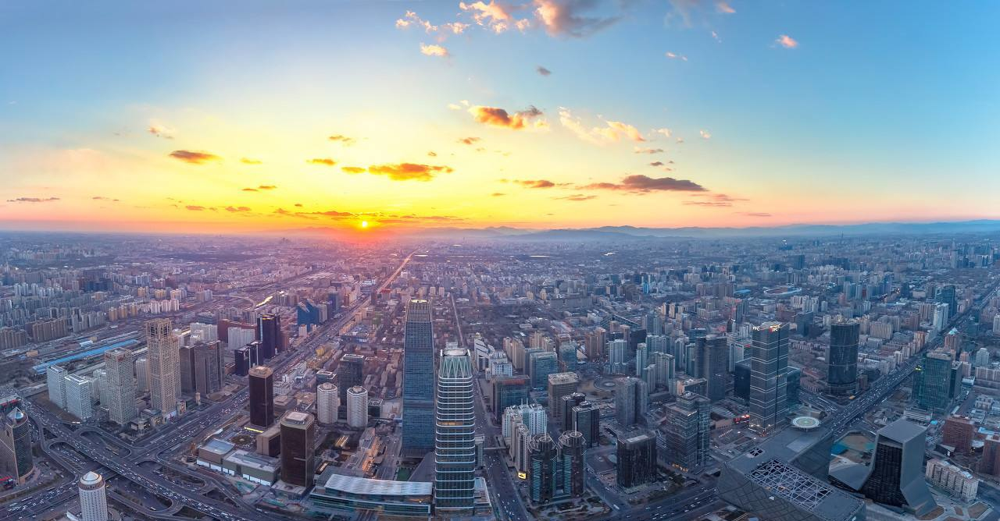
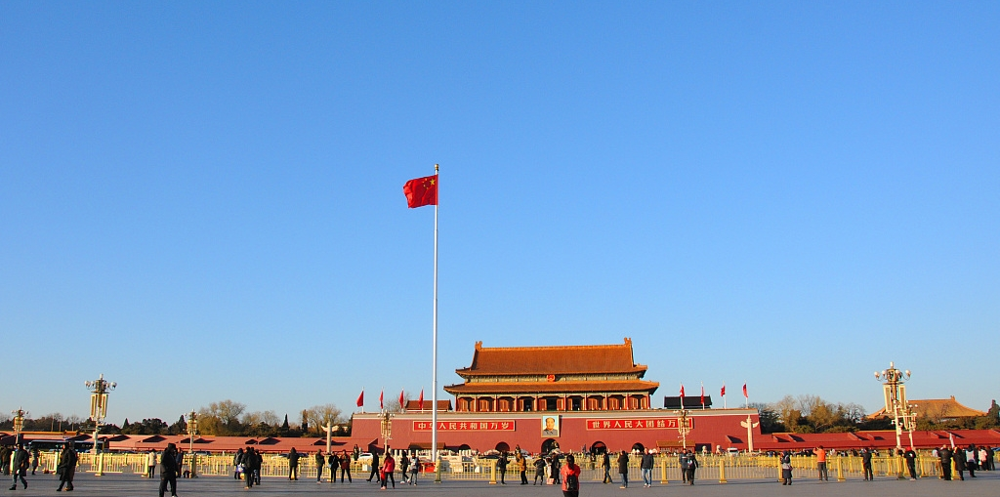
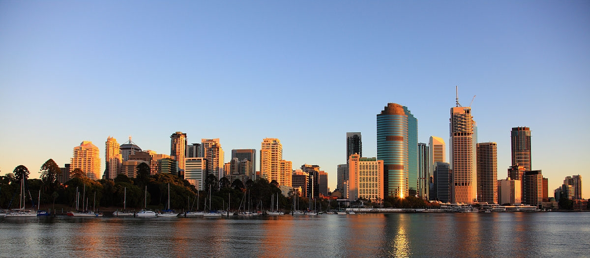
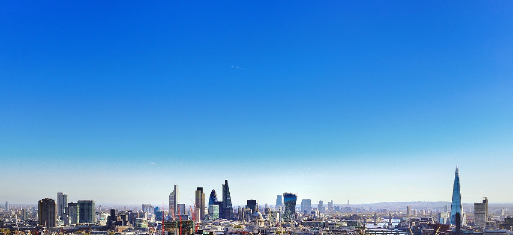
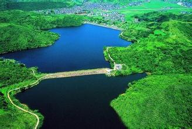
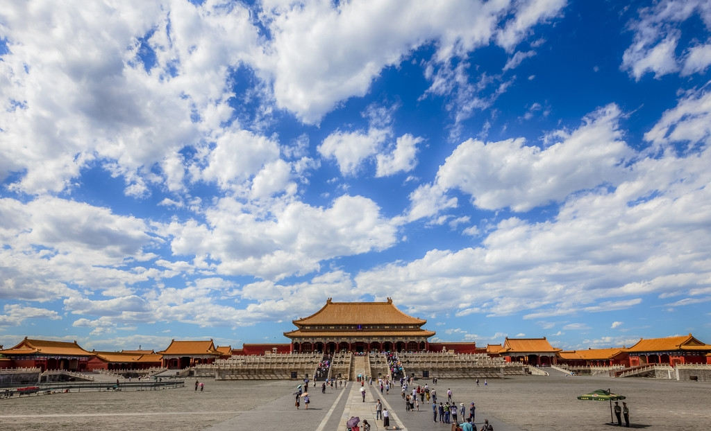
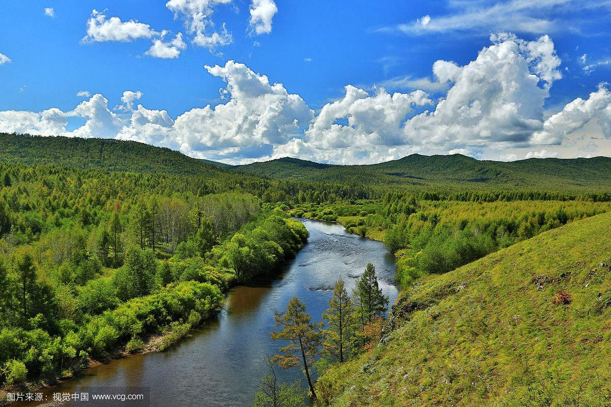
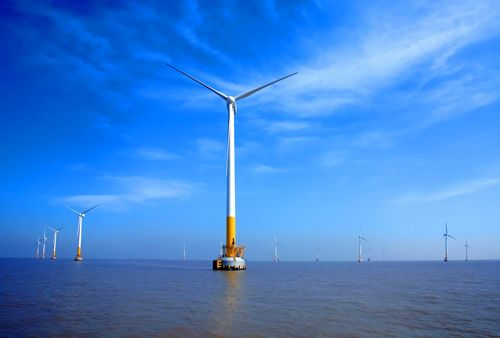
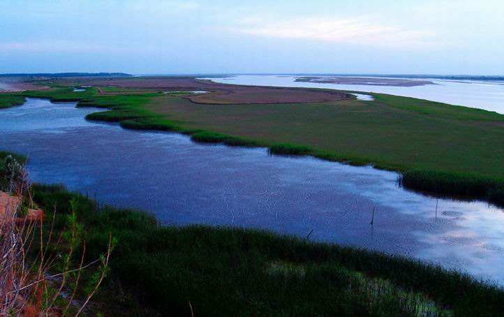

Toggle navigation
首页
政治建设
文化建设
生态建设
科技建设
天眼
北斗卫星
墨子号
关于我
初心铸魂，实干筑梦
为中华民族伟大复兴奋斗




生态建设

生态文明建设理念深入人心，在“绿水青山就是金山银山”“像保护眼睛一样保护生态环境，像对待生命一样对待生态环境”等可持续发展理念的引领下，生态文明建设正在广泛而深刻地改变着中国经济社会发展面貌。过去五年，全国各地都取得了哪些成绩？

北京
五年来，北京市空气质量持续改善，2016年，空气中细颗粒物(PM2.5)年均浓度为
73
微克/立方米， 较2012年下降
23.7
%。其他三项污染物可吸入颗粒物(PM10)、二氧化硫(SO2)和二氧化氮(NO2)较2012年分别 下降
15.2
%、
64.3
%和
8.2
%。
黑龙江
截至2016年底，黑龙江国有重点林区林地面积
8.6
万平方公里，活立木总蓄积
9.1
，森林覆盖率达
85.1
%。 曾有专业机构测算表明，黑龙江森林涵养水源
500
多亿立方米，黑龙江森林生态及湿地生态效益总价值达
1.8
万亿元。


广东
在清洁能源方面，广东每用
2
度电，就有近
1
度来自清洁能源。全省煤炭消费比重下降到
42
%以下，非化石能源消费比重提高到
21
%以上。 2016年全年，广东共计消纳清洁能源电量约
2515
亿千瓦时，减排二氧化碳约
8224
万吨。珠三角煤炭消费总量从2010年
8800
万吨的峰值， 下降到2016年的
6520
万吨。
山东
党的十八大以来，提前两年完成国家“大气十条”下达的“2017年PM2.5平均浓度比2013年下降
20
%左右”的目标任务；治理水土流失面积
8000
多平方公里；湿地保护面积新增
300
多万亩； 建立网格化环境监管体系，设立各级网格
3177
个；建立基于空气质量改善的生态补偿制度，2014年以来已累计补偿各市资金超过
8
亿元。

回到顶部
©2018河池学院 计算机与信息工程学院 2015级软件工程1班 刘小敏